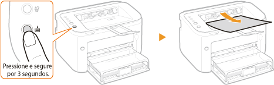
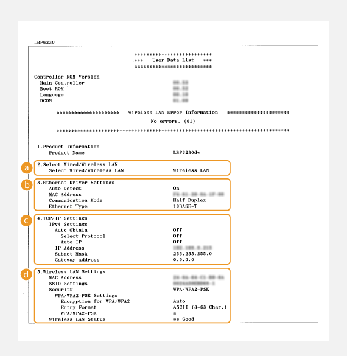

0KU8-023
Pressione a tecla  (Papel) desta impressora e segure-a por 3 segundos para imprimir uma lista parcial das configurações de rede. Isso permite verificar as configurações IPv4, o endereço MAC e as configurações de LAN cabeada/sem fio. A lista de configurações está formatada para ser impressa em papel tamanho A4. Antes de imprimir, carregue o papel tamanho A4 na multi-purpose tray ou na abertura de alimentação manual. Carregando papel na bandeja multifuncionalCarregando Papel na Abertura de Alimentação Manual
(Papel) desta impressora e segure-a por 3 segundos para imprimir uma lista parcial das configurações de rede. Isso permite verificar as configurações IPv4, o endereço MAC e as configurações de LAN cabeada/sem fio. A lista de configurações está formatada para ser impressa em papel tamanho A4. Antes de imprimir, carregue o papel tamanho A4 na multi-purpose tray ou na abertura de alimentação manual. Carregando papel na bandeja multifuncionalCarregando Papel na Abertura de Alimentação Manual
(Papel) desta impressora e segure-a por 3 segundos para imprimir uma lista parcial das configurações de rede. Isso permite verificar as configurações IPv4, o endereço MAC e as configurações de LAN cabeada/sem fio. A lista de configurações está formatada para ser impressa em papel tamanho A4. Antes de imprimir, carregue o papel tamanho A4 na multi-purpose tray ou na abertura de alimentação manual. Carregando papel na bandeja multifuncionalCarregando Papel na Abertura de Alimentação Manual
Exemplo de impressão:

 Select Wired/Wireless LAN
Select Wired/Wireless LANExibe se a conexão é feita por meio de LAN cabeada ou LAN sem fio.
 Ethernet Driver Settings
Ethernet Driver SettingsExibe as configurações de LAN cabeada (Ethernet) e endereço MAC.
Auto Detect
Exibe se a configuração para detectar automaticamente o modo de comunicação e o tipo de Ethernet está ativada ou desativada.
Exibe se a configuração para detectar automaticamente o modo de comunicação e o tipo de Ethernet está ativada ou desativada.
MAC Address
Exibe o endereço MAC na LAN cabeada.
Exibe o endereço MAC na LAN cabeada.
Communication Mode
Exibe o modo de comunicação (Half Duplex/Full Duplex).
Exibe o modo de comunicação (Half Duplex/Full Duplex).
Ethernet Type
Exibe a configuração de tipo de Ethernet (10BASE-T/100BASE-TX).
Exibe a configuração de tipo de Ethernet (10BASE-T/100BASE-TX).
 TCP/IP Settings
TCP/IP Settings Exibe as configurações IPv4.
Auto Obtain
Exibe se o endereço IP é designado automaticamente por um protocolo como o DHCP. "On" é exibido se o endereçamento automático está ativado.
Exibe se o endereço IP é designado automaticamente por um protocolo como o DHCP. "On" é exibido se o endereçamento automático está ativado.
Select Protocol
Exibe o protocolo usado para designar o endereço IP automaticamente.
Exibe o protocolo usado para designar o endereço IP automaticamente.
Auto IP
Exibe se o IP Automático está ativado ou desativado.
Exibe se o IP Automático está ativado ou desativado.
IP Address
Exibe o endereço IP.
Exibe o endereço IP.
Subnet Mask
Exibe a máscara de sub-rede.
Exibe a máscara de sub-rede.
Gateway Address
Exibe o endereço do gateway.
Exibe o endereço do gateway.

O endereço IP não é configurado corretamente se ele for exibido como "0.0.0.0".
Conectar a impressora a múltiplos hubs ou pontes pode resultar na falha da conexão mesmo quando o endereço IP está corretamente configurado. Esse problema pode ser resolvido definindo um certo intervalo antes de a impressora começar a se comunicar. Definindo um tempo de espera para a conexão de rede
 Wireless LAN Settings
Wireless LAN Settings Exibe as configurações de LAN sem fio e endereço MAC.
MAC Address
Exibe o endereço MAC na LAN sem fio.
Exibe o endereço MAC na LAN sem fio.
SSID Settings
Exibe as configurações SSID.
Exibe as configurações SSID.
Security
Exibe as configurações de segurança atualmente aplicadas. Se as configurações de segurança não foram definidas, "None" é exibido.
Exibe as configurações de segurança atualmente aplicadas. Se as configurações de segurança não foram definidas, "None" é exibido.
Wireless LAN Status
Exibe o status de conexão (intensidade do sinal) da LAN sem fio. Se a impressora não estiver conectada, "Inactive" ou "Disconnected" é exibido.
Exibe o status de conexão (intensidade do sinal) da LAN sem fio. Se a impressora não estiver conectada, "Inactive" ou "Disconnected" é exibido.
 |
|
Observe que não é possível conferir as configurações IPv6 e algumas das configurações de rede nesta lista de configurações. Para verificar todas as configurações de rede, imprima-as selecionando [Impressão do Status da Rede] na janela Status da Impressora. Imprimindo listas de configurações
|